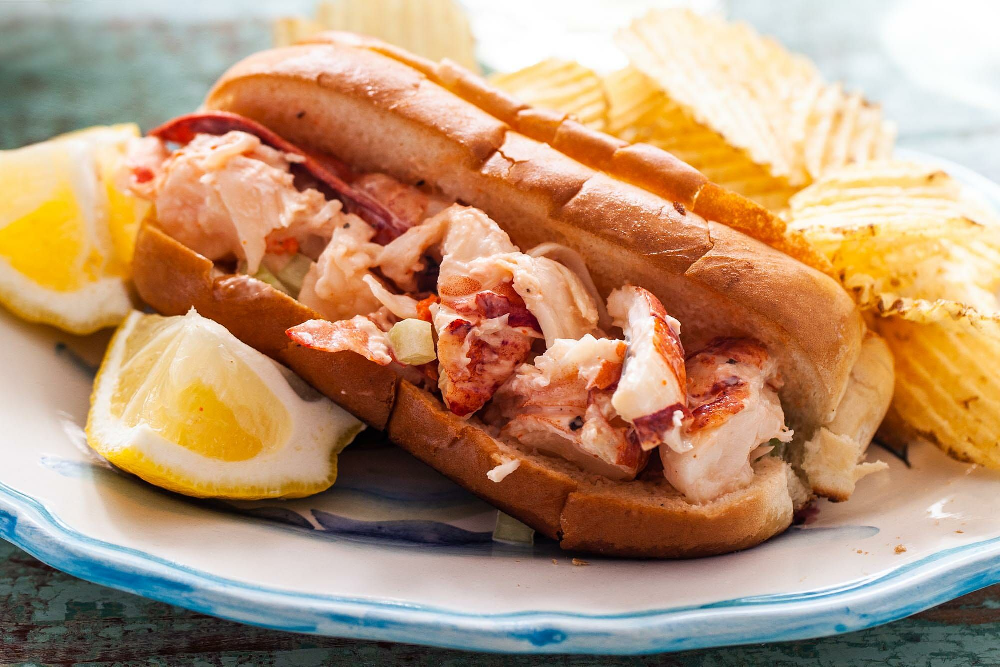

Lobster Rolls

A simple lobster roll for cookouts and get togethers.
This is a wonderful summer (or winter) treat and makes a fancy luncheon to impress your friends.
Ingredients
- 1 tablespoon butter
- 4 rolls (hot dog buns)
- 4 large lettuce leaves
- 1 pound of cubed lobster meat
- 2 tablespoons mayonnaise
- 1 teaspoon fresh lime juice
- 1 medium green onions
- 1 pinch of salt and pepper
Instructions
- Lightly butter the insides of the buns and line with lettuce leaves. Set aside
- In a medium bowl, stir together mayonnaise, lime, salt and pepper until well blended. Mix in the green onion, then mix in the lobster.
- Stuff the lobster filling into the buns and sprinkle parsley, basil or tarragon lightly over the filling.
- Enjoy!